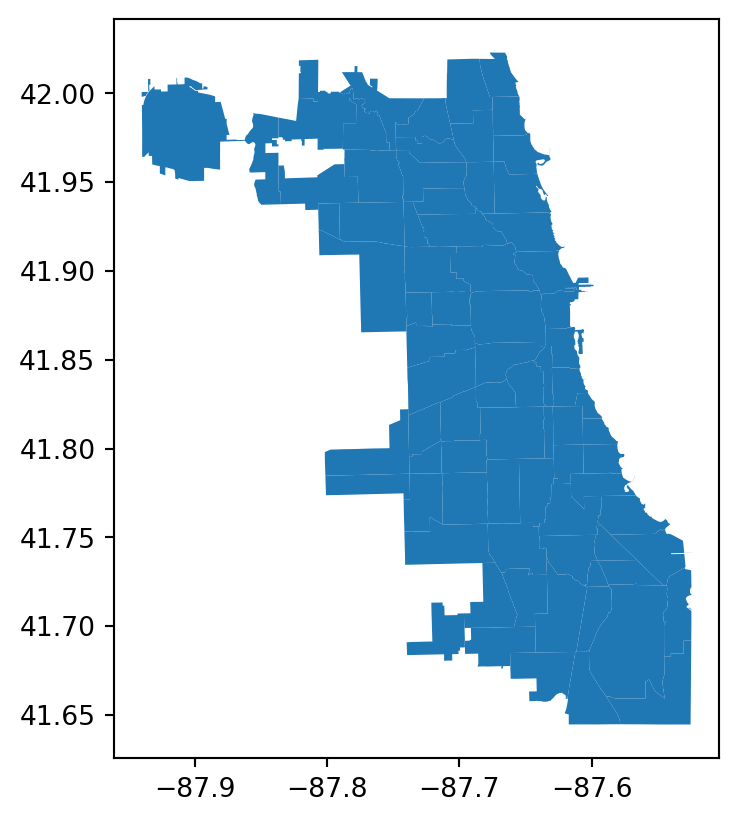
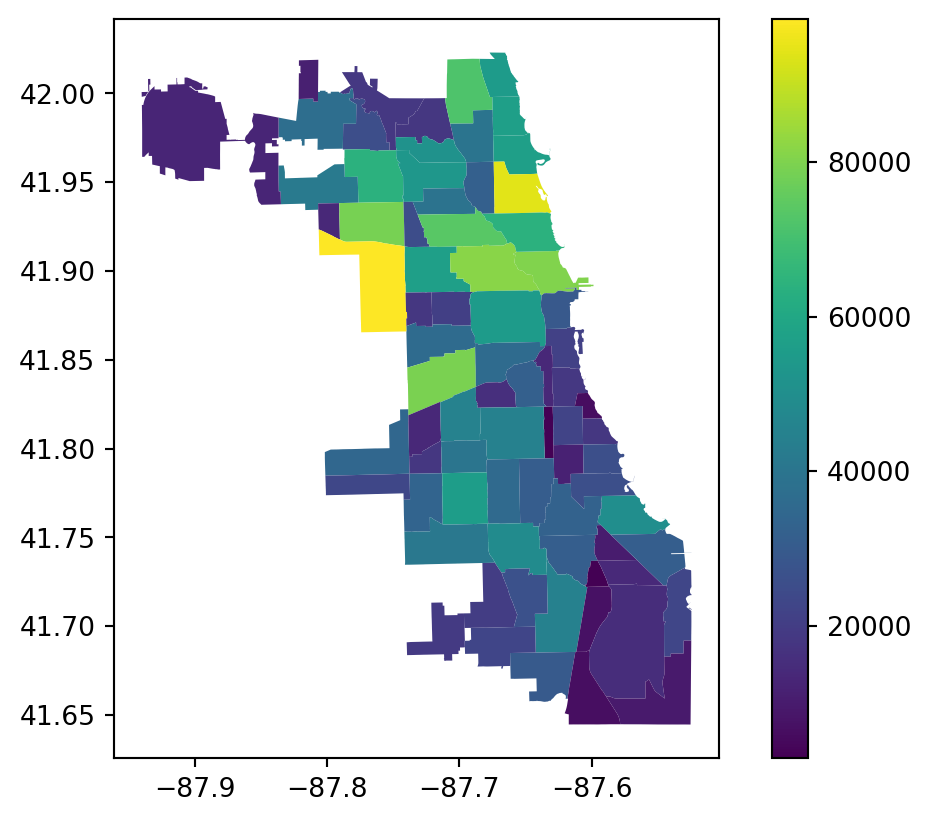
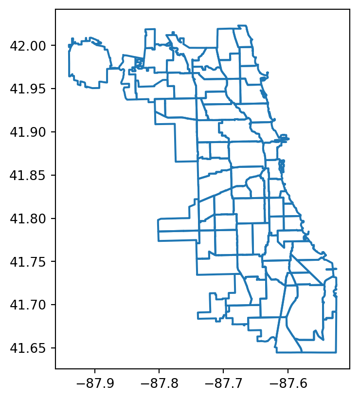
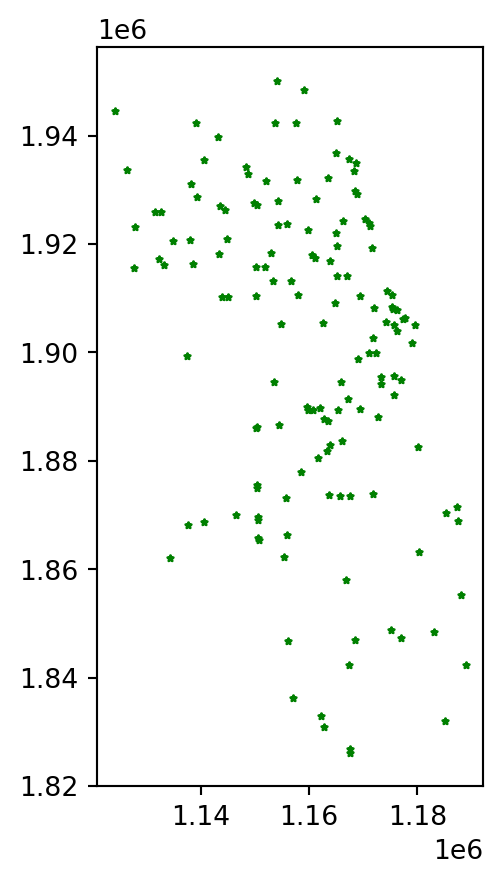
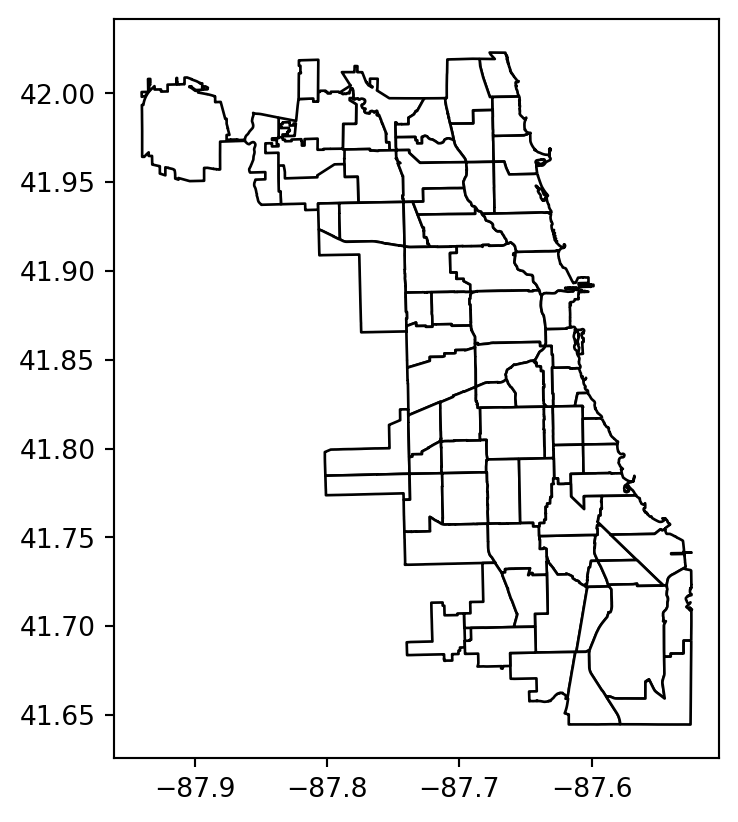
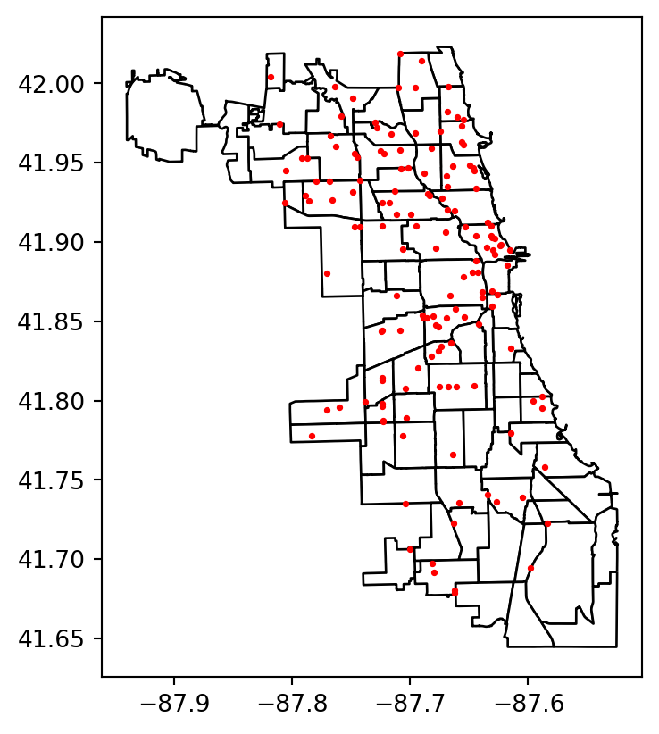
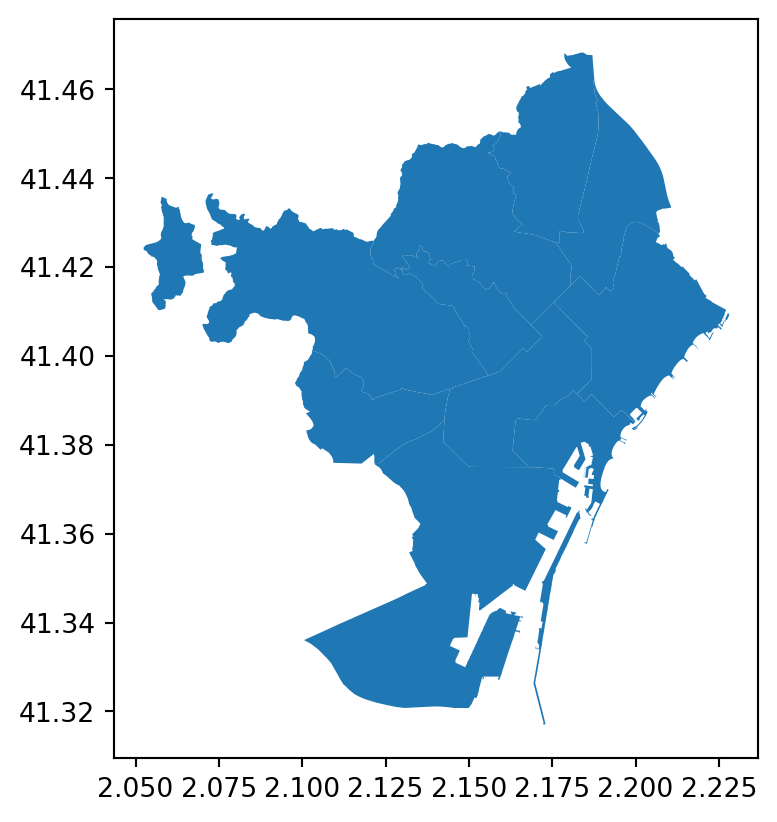

import geopandas as gpd
import geodatasets7 Spatial Visualization
7.1 Vector files
- Shapefiles
.shp file contains shape geometry
.dbf file holds attributes for each geometry
.shx file or shape index file helps link the attributes to the shapes
- GeoJSON: Unlike shapefiles, GeoJSON is a single file
chicago = gpd.read_file(geodatasets.get_path("geoda.chicago_commpop"))
chicago
chicago.crs<Geographic 2D CRS: EPSG:4326>
Name: WGS 84
Axis Info [ellipsoidal]:
- Lat[north]: Geodetic latitude (degree)
- Lon[east]: Geodetic longitude (degree)
Area of Use:
- name: World.
- bounds: (-180.0, -90.0, 180.0, 90.0)
Datum: World Geodetic System 1984 ensemble
- Ellipsoid: WGS 84
- Prime Meridian: Greenwichgroceries = gpd.read_file(geodatasets.get_path("geoda.groceries"))
groceries| OBJECTID | Ycoord | Xcoord | Status | Address | Chain | Category | geometry | |
|---|---|---|---|---|---|---|---|---|
| 0 | 16 | 41.973266 | -87.657073 | OPEN | 1051 W ARGYLE ST, CHICAGO, IL. 60640 | VIET HOA PLAZA | None | MULTIPOINT (1168268.672 1933554.350) |
| 1 | 18 | 41.696367 | -87.681315 | OPEN | 10800 S WESTERN AVE, CHICAGO, IL. 60643-3226 | COUNTY FAIR FOODS | None | MULTIPOINT (1162302.618 1832900.224) |
| 2 | 22 | 41.868634 | -87.638638 | OPEN | 1101 S CANAL ST, CHICAGO, IL. 60607-4932 | WHOLE FOODS MARKET | None | MULTIPOINT (1173317.042 1895425.426) |
| 3 | 23 | 41.877590 | -87.654953 | OPEN | 1101 W JACKSON BLVD, CHICAGO, IL. 60607-2905 | TARGET/SUPER | new | MULTIPOINT (1168996.475 1898801.406) |
| 4 | 27 | 41.737696 | -87.625795 | OPEN | 112 W 87TH ST, CHICAGO, IL. 60620-1318 | FOOD 4 LESS | None | MULTIPOINT (1176991.989 1847262.423) |
| ... | ... | ... | ... | ... | ... | ... | ... | ... |
| 143 | 585 | 41.880834 | -87.647729 | Chicago-West Loop | 40 S Halsted St, Chicago, IL 60661 | Mariano's | None | MULTIPOINT (1171065.063 1899839.376) |
| 144 | 586 | 41.920842 | -87.669112 | NewLocation | 2112 N Ashland Ave, Chicago IL 60614 | Mariano's | None | MULTIPOINT (1165217.798 1914159.975) |
| 145 | 587 | 41.835930 | -87.664034 | Chicago-Bridgeport | 3145 S Ashland Ave, Chicago, IL 60608 | Mariano's | None | MULTIPOINT (1166186.713 1883581.309) |
| 146 | 588 | 41.859370 | -87.630062 | Chicago-South Loop | 1615 S Clark St, Chicago, IL 60616 | Mariano's | None | MULTIPOINT (1175778.816 1892214.445) |
| 147 | 600 | 41.696869 | -87.599163 | New Location | 10900 S Doty Ave, Chicago IL 60628 | Pullman Walmart Center | None | MULTIPOINT (1185013.734 1832012.356) |
148 rows × 8 columns
chicago.plot();
chicago.plot(column="POP2010", legend=True);
chicago.boundary.plot();
7.2 Centroid
Centroid: center point of a geometry.
chicago['centroid']=chicago.centroid
chicagoC:\Users\DELL\AppData\Local\Temp\ipykernel_30056\3913322276.py:1: UserWarning: Geometry is in a geographic CRS. Results from 'centroid' are likely incorrect. Use 'GeoSeries.to_crs()' to re-project geometries to a projected CRS before this operation.
chicago['centroid']=chicago.centroid| community | NID | POP2010 | POP2000 | POPCH | POPPERCH | popplus | popneg | geometry | centroid | |
|---|---|---|---|---|---|---|---|---|---|---|
| 0 | DOUGLAS | 35 | 18238 | 26470 | -8232 | -31.099358 | 0 | 1 | MULTIPOLYGON (((-87.60914 41.84469, -87.60915 ... | POINT (-87.61868 41.83512) |
| 1 | OAKLAND | 36 | 5918 | 6110 | -192 | -3.142390 | 0 | 1 | MULTIPOLYGON (((-87.59215 41.81693, -87.59231 ... | POINT (-87.60322 41.82375) |
| 2 | FULLER PARK | 37 | 2876 | 3420 | -544 | -15.906433 | 0 | 1 | MULTIPOLYGON (((-87.62880 41.80189, -87.62879 ... | POINT (-87.63242 41.80909) |
| 3 | GRAND BOULEVARD | 38 | 21929 | 28006 | -6077 | -21.698922 | 0 | 1 | MULTIPOLYGON (((-87.60671 41.81681, -87.60670 ... | POINT (-87.61786 41.81295) |
| 4 | KENWOOD | 39 | 17841 | 18363 | -522 | -2.842673 | 0 | 1 | MULTIPOLYGON (((-87.59215 41.81693, -87.59215 ... | POINT (-87.59618 41.80892) |
| ... | ... | ... | ... | ... | ... | ... | ... | ... | ... | ... |
| 72 | MOUNT GREENWOOD | 74 | 19093 | 18820 | 273 | 1.450584 | 1 | 0 | MULTIPOLYGON (((-87.69646 41.70714, -87.69644 ... | POINT (-87.71319 41.69488) |
| 73 | MORGAN PARK | 75 | 22544 | 25226 | -2682 | -10.631888 | 0 | 1 | MULTIPOLYGON (((-87.64215 41.68508, -87.64249 ... | POINT (-87.66905 41.68973) |
| 74 | OHARE | 76 | 12756 | 11956 | 800 | 6.691201 | 1 | 0 | MULTIPOLYGON (((-87.83658 41.98640, -87.83658 ... | POINT (-87.89370 41.97568) |
| 75 | EDGEWATER | 77 | 56521 | 62198 | -5677 | -9.127303 | 0 | 1 | MULTIPOLYGON (((-87.65456 41.99817, -87.65456 ... | POINT (-87.66342 41.98671) |
| 76 | EDISON PARK | 9 | 11187 | 11259 | -72 | -0.639488 | 0 | 1 | MULTIPOLYGON (((-87.80676 42.00084, -87.80676 ... | POINT (-87.81378 42.00761) |
77 rows × 10 columns
7.3 Area
chicago['area'] = chicago.area
chicagoC:\Users\DELL\AppData\Local\Temp\ipykernel_30056\1530745536.py:1: UserWarning: Geometry is in a geographic CRS. Results from 'area' are likely incorrect. Use 'GeoSeries.to_crs()' to re-project geometries to a projected CRS before this operation.
chicago['area'] = chicago.area| community | NID | POP2010 | POP2000 | POPCH | POPPERCH | popplus | popneg | geometry | centroid | area | |
|---|---|---|---|---|---|---|---|---|---|---|---|
| 0 | DOUGLAS | 35 | 18238 | 26470 | -8232 | -31.099358 | 0 | 1 | MULTIPOLYGON (((-87.60914 41.84469, -87.60915 ... | POINT (-87.61868 41.83512) | 0.000463 |
| 1 | OAKLAND | 36 | 5918 | 6110 | -192 | -3.142390 | 0 | 1 | MULTIPOLYGON (((-87.59215 41.81693, -87.59231 ... | POINT (-87.60322 41.82375) | 0.000170 |
| 2 | FULLER PARK | 37 | 2876 | 3420 | -544 | -15.906433 | 0 | 1 | MULTIPOLYGON (((-87.62880 41.80189, -87.62879 ... | POINT (-87.63242 41.80909) | 0.000200 |
| 3 | GRAND BOULEVARD | 38 | 21929 | 28006 | -6077 | -21.698922 | 0 | 1 | MULTIPOLYGON (((-87.60671 41.81681, -87.60670 ... | POINT (-87.61786 41.81295) | 0.000488 |
| 4 | KENWOOD | 39 | 17841 | 18363 | -522 | -2.842673 | 0 | 1 | MULTIPOLYGON (((-87.59215 41.81693, -87.59215 ... | POINT (-87.59618 41.80892) | 0.000293 |
| ... | ... | ... | ... | ... | ... | ... | ... | ... | ... | ... | ... |
| 72 | MOUNT GREENWOOD | 74 | 19093 | 18820 | 273 | 1.450584 | 1 | 0 | MULTIPOLYGON (((-87.69646 41.70714, -87.69644 ... | POINT (-87.71319 41.69488) | 0.000759 |
| 73 | MORGAN PARK | 75 | 22544 | 25226 | -2682 | -10.631888 | 0 | 1 | MULTIPOLYGON (((-87.64215 41.68508, -87.64249 ... | POINT (-87.66905 41.68973) | 0.000923 |
| 74 | OHARE | 76 | 12756 | 11956 | 800 | 6.691201 | 1 | 0 | MULTIPOLYGON (((-87.83658 41.98640, -87.83658 ... | POINT (-87.89370 41.97568) | 0.003752 |
| 75 | EDGEWATER | 77 | 56521 | 62198 | -5677 | -9.127303 | 0 | 1 | MULTIPOLYGON (((-87.65456 41.99817, -87.65456 ... | POINT (-87.66342 41.98671) | 0.000489 |
| 76 | EDISON PARK | 9 | 11187 | 11259 | -72 | -0.639488 | 0 | 1 | MULTIPOLYGON (((-87.80676 42.00084, -87.80676 ... | POINT (-87.81378 42.00761) | 0.000319 |
77 rows × 11 columns
7.4 Boundary
chicago['boundary']=chicago.boundary
chicago| community | NID | POP2010 | POP2000 | POPCH | POPPERCH | popplus | popneg | geometry | centroid | area | boundary | |
|---|---|---|---|---|---|---|---|---|---|---|---|---|
| 0 | DOUGLAS | 35 | 18238 | 26470 | -8232 | -31.099358 | 0 | 1 | MULTIPOLYGON (((-87.60914 41.84469, -87.60915 ... | POINT (-87.61868 41.83512) | 0.000463 | MULTILINESTRING ((-87.60914 41.84469, -87.6091... |
| 1 | OAKLAND | 36 | 5918 | 6110 | -192 | -3.142390 | 0 | 1 | MULTIPOLYGON (((-87.59215 41.81693, -87.59231 ... | POINT (-87.60322 41.82375) | 0.000170 | MULTILINESTRING ((-87.59215 41.81693, -87.5923... |
| 2 | FULLER PARK | 37 | 2876 | 3420 | -544 | -15.906433 | 0 | 1 | MULTIPOLYGON (((-87.62880 41.80189, -87.62879 ... | POINT (-87.63242 41.80909) | 0.000200 | MULTILINESTRING ((-87.62880 41.80189, -87.6287... |
| 3 | GRAND BOULEVARD | 38 | 21929 | 28006 | -6077 | -21.698922 | 0 | 1 | MULTIPOLYGON (((-87.60671 41.81681, -87.60670 ... | POINT (-87.61786 41.81295) | 0.000488 | MULTILINESTRING ((-87.60671 41.81681, -87.6067... |
| 4 | KENWOOD | 39 | 17841 | 18363 | -522 | -2.842673 | 0 | 1 | MULTIPOLYGON (((-87.59215 41.81693, -87.59215 ... | POINT (-87.59618 41.80892) | 0.000293 | MULTILINESTRING ((-87.59215 41.81693, -87.5921... |
| ... | ... | ... | ... | ... | ... | ... | ... | ... | ... | ... | ... | ... |
| 72 | MOUNT GREENWOOD | 74 | 19093 | 18820 | 273 | 1.450584 | 1 | 0 | MULTIPOLYGON (((-87.69646 41.70714, -87.69644 ... | POINT (-87.71319 41.69488) | 0.000759 | MULTILINESTRING ((-87.69646 41.70714, -87.6964... |
| 73 | MORGAN PARK | 75 | 22544 | 25226 | -2682 | -10.631888 | 0 | 1 | MULTIPOLYGON (((-87.64215 41.68508, -87.64249 ... | POINT (-87.66905 41.68973) | 0.000923 | MULTILINESTRING ((-87.64215 41.68508, -87.6424... |
| 74 | OHARE | 76 | 12756 | 11956 | 800 | 6.691201 | 1 | 0 | MULTIPOLYGON (((-87.83658 41.98640, -87.83658 ... | POINT (-87.89370 41.97568) | 0.003752 | MULTILINESTRING ((-87.83658 41.98640, -87.8365... |
| 75 | EDGEWATER | 77 | 56521 | 62198 | -5677 | -9.127303 | 0 | 1 | MULTIPOLYGON (((-87.65456 41.99817, -87.65456 ... | POINT (-87.66342 41.98671) | 0.000489 | MULTILINESTRING ((-87.65456 41.99817, -87.6545... |
| 76 | EDISON PARK | 9 | 11187 | 11259 | -72 | -0.639488 | 0 | 1 | MULTIPOLYGON (((-87.80676 42.00084, -87.80676 ... | POINT (-87.81378 42.00761) | 0.000319 | MULTILINESTRING ((-87.80676 42.00084, -87.8067... |
77 rows × 12 columns
7.5 Add points
groceries.plot(marker='*', color='green', markersize=5);
groceries = groceries.to_crs(chicago.crs)base = chicago.plot(color='white', edgecolor='black')
base<Axes: >
base = chicago.plot(color='white', edgecolor='black')
groceries.plot(ax=base, marker='o', color='red', markersize=3);
7.6 Reading external data
url = 'https://raw.githubusercontent.com/jcanalesluna/bcn-geodata/master/districtes/districtes.geojson'
districts = gpd.read_file(url)
districts
districts.crs<Geographic 2D CRS: EPSG:4326>
Name: WGS 84
Axis Info [ellipsoidal]:
- Lat[north]: Geodetic latitude (degree)
- Lon[east]: Geodetic longitude (degree)
Area of Use:
- name: World.
- bounds: (-180.0, -90.0, 180.0, 90.0)
Datum: World Geodetic System 1984 ensemble
- Ellipsoid: WGS 84
- Prime Meridian: Greenwichdistricts.plot();